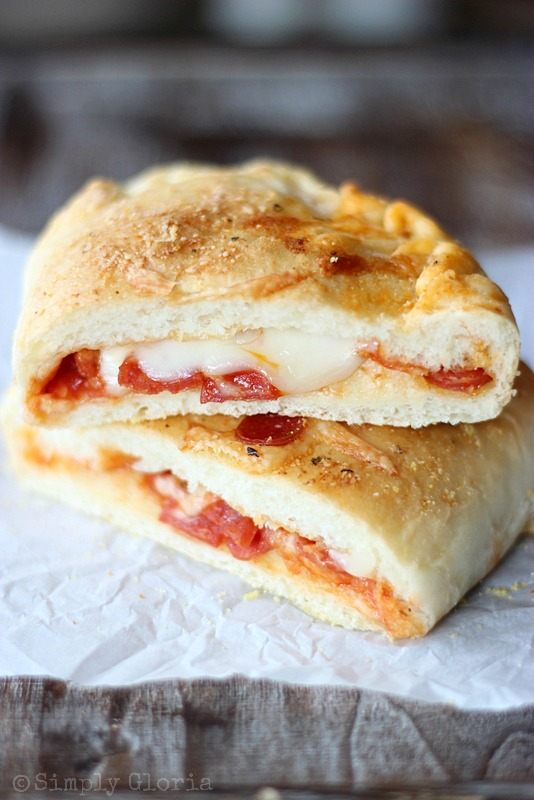

Healthy Homemade Pizza Pocket

Description
Ingredients:
- Xtreme Wellness large wraps
- turkey pepperoni
- low fat shredded mozzarella cheese
- pizza sauce
- Hillshire Farm sliced turkey
- garlic salt
- ranch
Steps:
- Lay out wrap and place one serving of shredded mozarella on it
- Pour one serving of pizza sauce over the shredded mozarella
- Place one serving of turkey pepperoni along the sauce
- Place one serving of turkey slices along the sauce
- Sprinkle garlic salt over the wrap
- Roll into a burrito wrap
- Place in air fryer and set it for 8 minutes at 400F
- When the pizza pocket is finished, plate it along with ranch on the side as dipping sauce
- Enjoy!